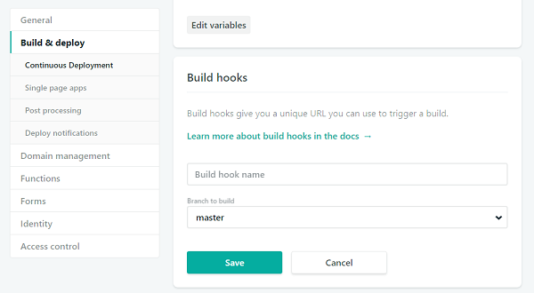
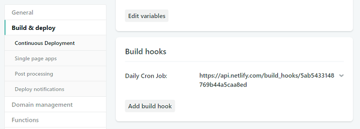
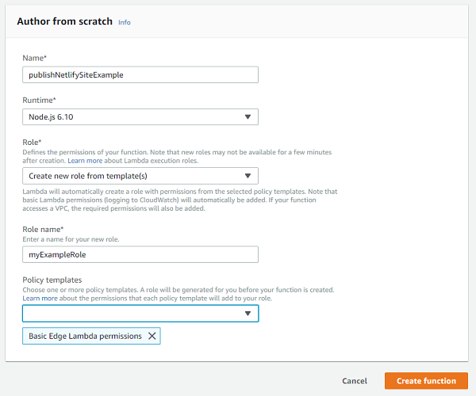
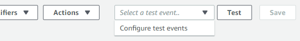
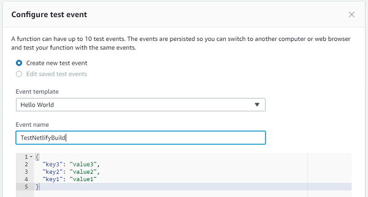
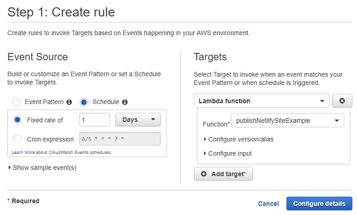
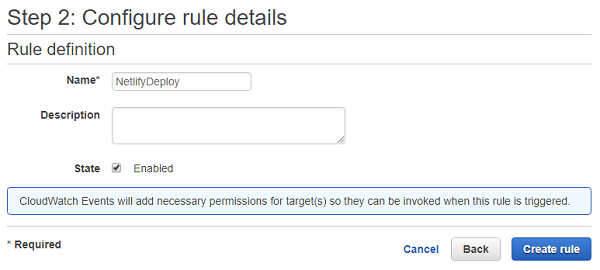

Scheduling Jekyll posts with Netlify and AWS
Using AWS Lambda functions to schedule Netlify builds.
Not too long ago I moved this site from a custom setup on Amazon Web Services (AWS) to Netlify[1]. My AWS setup was a bit cumbersome, consisting of a Jenkins machine that pulled from a private GitHub repository, built the site using Jekyll[2], and published the result to S3. The benefit of this setup over using GitHub pages was that I could schedule posts to be published later. Jenkins was run every morning and new posts were automatically published without manual intervention. (Jenkins was also triggered whenever I pushed to the GitHub repository for instant builds.)
My custom AWS setup worked well, but it cost around $14 every month and I wasn’t happy about that, especially given how infrequently I’ve been writing new posts in the past couple of years. I decided in the short-term to just move this site to Netlify and not worry about scheduling posts because I didn’t think I would be writing that much for the foreseeable future. If I ever wanted to post something, I could do so manually, and in the meantime I’d be saving $14 a month. As it turned out, scheduling posts on Netlify was a lot simpler than I thought it would be. All I needed was an AWS Lambda function and an AWS Cloudwatch event.
Note: This post assumes you already have a site setup on Netlify using a GitHub repository. While I assume the solution works the same for other source code repository types, like BitBucket, I’m not entirely sure. This post also assumes that you have an AWS account.
Configuring Jekyll
By default, Jekyll generates all blog posts in the _posts directory regardless of the publish date associated with each. That obviously doesn’t work well when you want to schedule posts to be published in the future, so the first step is to configure Jekyll to ignore future posts. To do so, add this key to Jekyll’s _config.yml:
future: false
Setting future to false tells Jekyll to skip any posts with a publish date in the future. You can then set the date field in the front matter of a post to a future date and know that the post will not be generated until then, like this:
---
layout: post
title: "My future post"
date: 2075-01-01 00:00:00
---
This post will be published on January 1, 2075, so it will not be built by Jekyll until that point in time. I find it easier to schedule all posts for midnight so that whenever the site gets published, so long as the date matches, the post will always be generated.
Generating a Netlify build hook
One of the things I like about Netlify is that you can trigger a new site build whenever you want, either manually or programmatically. Netlify has a useful feature called a build hook[3], which is a URL that triggers a new build. To generate a new build hook, go to the Netlify dashboard for your domain and go Site Settings and then to the Build & Deploy page. When you scroll down, you’ll see a section for Build Hooks. Click “Add build hook”, give your new hook a name (something like “Daily Cron Job” would be appropriate here), and choose the branch to build from.

You’ll be presented with a new URL that looks something like this:
https://api.netlify.com/build_hooks/{some long unique identifier}
Whenever you send a POST request to the build hook, Netlify will pull the latest files from the GitHub repository, build the site, and deploy it. This is quite useful because you don’t need to worry about authenticating against the Netlify API; you can use this URL without credentials. Just make sure to keep this URL a secret. You can see the URL in your list of build hooks on the same page.

(Don’t worry, the build hook URL in the screenshot has already been deleted.)
Creating the AWS Lambda function
AWS Lambda functions are standalone functions that don’t require you to setup and manage a server. As such, they are especially useful when you have very simple processes to run infrequently. All you need to do is create a Lambda function that sends a POST request to the build URL.
The first step is to create a local Node.js application that will become the executable code for the Lamda function. Create a new directory (build-netlify-lambda, for example) and install the request module, which will make it easy to send an HTTP request:
$ cd build-netlify-lambda
$ npm i request
You can create a package.json file if you want, but it’s not necessary.
Next, create a file called index.js inside of build-netlify-lamda and paste the following code into it:
"use strict";
const request = require("request");
exports.handler = (event, context, callback) => {
request.post(process.env.URL, callback);
};
All Lamda functions export a handler function that receives three parameters: an event object with information about the event that triggered the function call, a context object with information about the runtime environment, and a callback function to call when the function is finished. In this case, you only need the callback function. The Netlify build hook will be stored in an environment variable called URL in the Lambda function, which you access using process.env.URL. That value is passed directly to request.post() along with the callback, making this Lamda function as small as possible.
Now, you just need to zip up the entire build-netlify-lambda directory so it can be deployed to AWS Lambda:
$ zip -r build-netlify-lamda.zip index.js node_modules/
Make sure the top level of the zip file has both index.js and node_modules/. If you mistakenly zip up the entire directory so that build-netlify-lambda is at the top level, AWS will not find the executable files.
The last step is to upload this zip file to AWS. To do so, go to the AWS Console[4] and click “Create Function”.

You’ll be presented with a form to fill out. Enter a name for the function, such as “publishNetlifySiteExample” and select one of the Node.js options as your runtime. The last field is for the Lambda role. If you already have other roles defined, you can use one that already exists; otherwise, select “Create role from template(s)”. This Lambda function doesn’t need a lot of permissions, so you can just add “Basic Edge Lambda Permissions” to allow access to logs. Click “Create Function”.
When the Lambda function has been created, a new screen will load. This screen is a bit difficult to parse due to the amount of information on it. If this is your first Lambda function, don’t worry, you’ll get used to it quickly. Scroll down to the section called “Function Code” and select “Upload a .ZIP file” from the “Code entry type” dropdown. You can then select your zip file to upload to the Lambda function.
Beneath the “Function Code” section is the “Environment Variables” section. Create a new environment variable named URL with its value set to your Netlify build hook. Once that’s complete, click “Save” at the top of the screen to upload the zip file and save your environment variables.
You can test the Lambda function by creating a new test event. At the top of the screen, click the “Select a Test Event Dropdown” and select “Configure Test Events”.

A new dialog will open to create a test event. Since this Lambda function doesn’t use any incoming data, you can keep the default settings and give the event a meaningful name like “TestNetlifyBuild”. Click the “Create” button to save the test event.

In order to run the test, make sure “TestNetlifyBuild” is selected in the dropdown at the top of the screen and click the “Test” button. This will execute the function. If you look at your Netlify Deploys dashboard, you should see a new build begin.
Setting up the Cloudwatch event
At this point, the Lambda function is operational and will trigger a new Netlify deploy when executed. That’s somewhat useful but isn’t much more powerful than logging into the Netlify dashboard and manually triggering a build. The goal is to have Netlify build automatically on a certain schedule and Cloudwatch is the perfect solution.
Cloudwatch is a service that generates events based on any number of criteria. You can use it to monitor your services on a variety of criteria and then respond with certain actions. For the purposes of this post, Cloudwatch will be set to run periodically and then trigger the Lambda function that builds the Netlify website.
On the Cloudwatch console[5], click “Events” on the left menu and then the “Create Rule” button.

Under “Event Source” select “Schedule”. You’re now able to select the frequency with which you want the event to be triggered. You can select an interval of minutes, hours, or days, or you can create a custom schedule using a Cron expression. (If you want to control the exact time that an event is triggered, it’s best to use a Cron expression.) Under “Targets”, select “Lambda function” and your function name. There’s no need to configure the version/alias or input because the Lambda function isn’t using any of those. Click the “Configure Details” button. You’ll be brought to a second dialog.

In this dialog, fill in a meaningful name for your event (and optional description) and then click “Create Rule”. Rules are on by default so your new event should be triggered at the next interval. The Lambda function will then be called and regenerate the website.
Conclusion
This website has been running on the setup described in this post for over a month. In fact, this post was written ahead of time and published using my AWS Cloudwatch event and Lambda function. The functionality is the same as my previous setup with Jenkins and S3, however, this setup costs $0 compared to $14. I only run my Cloudwatch event two times a week (I’m not posting much these days) and each run of the Lambda function takes under two seconds to complete, which means I fall into the free tier and I’m not charged anything.
The Lambda free tier is one million requests and 400,000 GB-seconds per month. A GB-second is one second of execution time with 1 GB of allocated memory. The Lambda function created in this post uses the default memory allocation of 128 MB. If you figure out the match, you’ll still be in the free tier even if you run your Lambda function every hour of the day each month. As the Lambda function only sends off an HTTPS request and then Netlify does the build, the real work isn’t done inside of Lambda.
I’ve found this setup to be very simple and cost-efficient, not to mention a lot less complicated. I no longer have to log into a Jenkins server to figure out why a build of the website failed. There’s just one small function to manage and all of the important information is displayed in the Netlify dashboard.
The most important thing to remember when using this setup is to set the date field of each post to some time in the future. When the Cloudwatch event triggers the Lambda function to execute, only those posts with a date in the past will be generated. You can play around with the timing of the Cloudwatch event to best suit your frequency of posts, and keep in mind that Netlify automatically builds the site whenever a change is pushed, so you still have just-in-time updates as needed.
References
- Netlify (netlify.com)
- Jekyll (jekyllrb.com/)
- Netlify Webhooks - Incoming Hooks (netlify.com)
- AWS Console - Lambda (console.aws.amazon.com)
- AWS Console - Cloudwatch (console.aws.amazon.com)